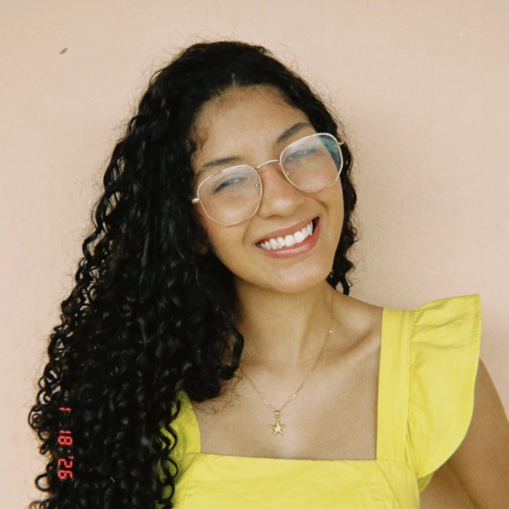

Olá, você está na minha landing page.

Meu nome é Sarah Keyse Fernandes de Moraes Soeiro - eu sei que você pensou:"Que nome grande!", e sei que se eu não tivesse interrompido seus pensamentos, você teria pensado:"Esse nome parece de artista!", e eu sou mesmo, uma artista da tecnologia (plim plim), acho que caiu uns brilhinhos na sua tela.
Voltando ao que interessa, minha história começa na Bahia, na cidade de Teixeira de Freitas. Ainda muito nova, me mudei para o Espírito Santo, em Linhares, onde cresci e vivi quase todos os meus 18 anos de vida. Foram cerca de 17 anos construindo minhas raízes, o que me faz me considerar, com carinho, mais capixaba do que baiana.
Sou a filha mais nova de uma família unida, com pais casados há mais de duas décadas, e tenho um irmão e uma irmã que fazem parte da minha base. Também tenho uma cachorra que me acompanha há muitos anos, quase como se tivesse crescido junto comigo.
Minha trajetória sempre esteve conectada à fé. Cresci na igreja e sigo acreditando em Deus como um dos pilares da minha vida, o que influencia diretamente meus valores, minhas escolhas e a forma como enxergo o mundo.
Ao longo da minha formação, passei por diferentes escolas em Linhares. Concluí o Ensino Fundamental I em escolas da rede local e o Ensino Fundamental II na escola conhecida como CAIC (Samuel Batista Cruz). Posteriormente, cursei o Ensino Médio integrado ao técnico em Administração no IFES – Campus Linhares, onde desenvolvi disciplina, organização e uma visão mais estratégica.
Atualmente, iniciei minha graduação em Sistemas de Informação, buscando construir uma carreira na área de tecnologia. Tenho interesse em áreas como experiência do usuário (UX), banco de dados e soluções digitais que facilitem a vida das pessoas.
Além dos estudos, carrego interesses que fazem parte da minha essência. Gosto de cantar, assistir séries e acompanhar futebol, sendo torcedora do Vasco desde sempre - não vem me zoar, foi o Vasco que me ensinou a persistir. Também valorizo momentos de descanso e atividades que me ajudam a manter o equilíbrio em meio à rotina.
Mais do que uma trajetória pronta, vejo minha história como um processo em construção, guiado por aprendizado constante, propósito e fé.
Concluí o Ensino Médio integrado ao curso técnico em Administração pelo IFES – Campus Linhares (2023–2025), onde desenvolvi habilidades relacionadas à organização, gestão e pensamento crítico. Atualmente, curso Sistemas de Informação na Universidade Vila Velha (UVV), com início em 2026 e previsão de conclusão em 2029. Durante a graduação, venho aprofundando meus conhecimentos em desenvolvimento de sistemas, análise de dados e experiência do usuário.
Ainda não possuo experiência profissional formal, mas estou em constante desenvolvimento para o mercado de trabalho. Tenho interesse em áreas como UX (experiência do usuário), banco de dados e consultoria de software, mantendo-me aberta a explorar diferentes possibilidades dentro da tecnologia. Busco construir uma carreira sólida, aliando conhecimento técnico, criatividade e visão estratégica.
Entre minhas principais habilidades, destaco a criatividade, a comunicação e a facilidade em aprender. Já participei de mostras científicas no IFES e eventos voltados à área de Administração, além de ter realizado um curso de fotografia, que contribuiu para o desenvolvimento do meu olhar criativo. Também tive uma experiência empreendedora com a produção e venda de doces, o que fortaleceu meu senso de responsabilidade e iniciativa.
Atualmente, estudo disciplinas voltadas ao desenvolvimento tecnológico, como desenvolvimento web, aplicativos móveis, experiência do usuário, lógica para computação e fundamentos da tecnologia, fortalecendo minha base técnica e acadêmica.
No meu tempo livre, busco atividades que me ajudam a relaxar e estimular minha criatividade. Gosto de cantar, assistir séries e conteúdos audiovisuais, além de manter o hábito da leitura sempre que possível. Também pratico exercícios físicos e acompanho futebol, especialmente os jogos do Club de Regatas Vasco da Gama. Esses momentos são importantes para equilibrar minha rotina e manter minha mente ativa.
No meu tempo livre, gosto de atividades que me ajudam a relaxar e me expressar. Entre meus principais interesses estão:
Esses momentos são importantes para equilibrar minha rotina de estudos e manter minha criatividade ativa.
Pretendo concluir minha graduação e continuar me especializando, com a possibilidade de experiências internacionais. Meu objetivo é crescer profissionalmente sem perder de vista aquilo que me motiva, buscando equilíbrio entre realização pessoal e sucesso na área de tecnologia.
Para não ficarmos apenas nas minhas palavras - ou digitações - segue alguns vídeos sobre o futuro tecnologia, representando o ambiente de trabalho e estudo da área de Sistemas de Informação.